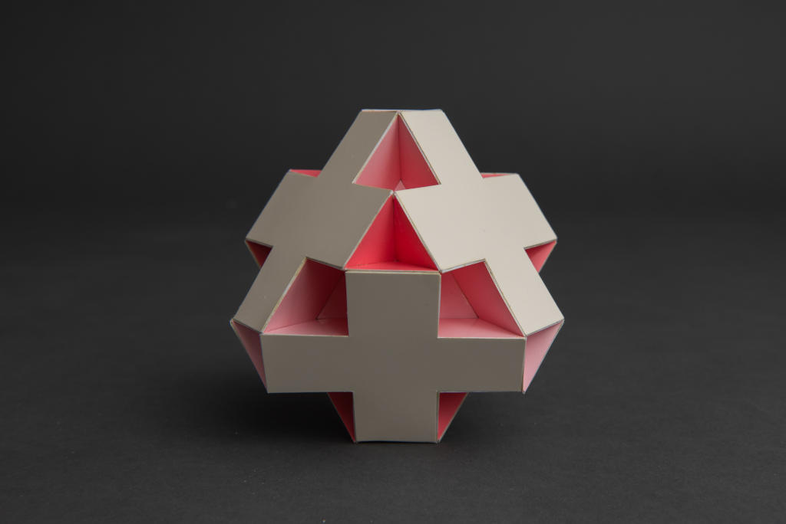
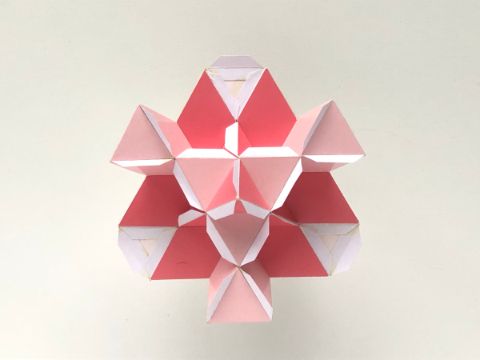
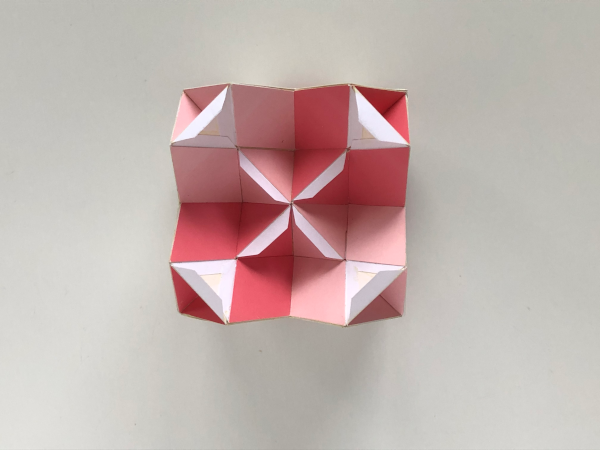
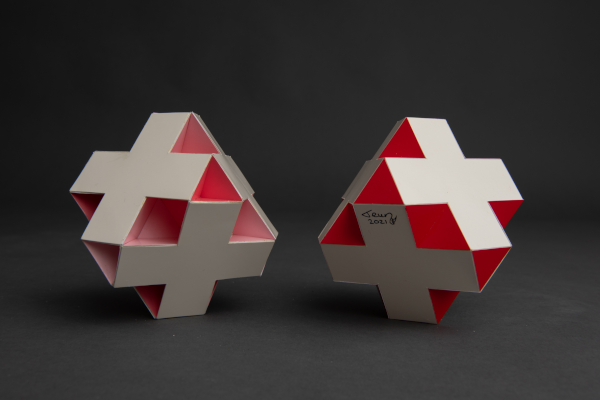

Faceted Swissohedron

This is the faceted version of the Swissohedron. The most natural way of interpreting this polyhedron is by seeing it as consisting of 6 crosses consiting of two rectangles and 8 isosceles hexagons. The hexagons intersect each other and different parts can be seen from different sides. The inside of this polyhedron is surprisingly beautiful where the innermost small triangle parts form a Stella Octangula.
The picture below shows the inside and you can clearly see the two different sides of the hexagons. The dark pink that you are looking straight onto shows one part. The light pink part that you look straight on it the flipped part of the hexagon that is visible from the other side.

The picture below shows how the model looked like just before the last parts for the final cross were added. In both images it is possible to recognise the Stella Octangula that is inside.

The model was built in 2021 and the smaller edge length is 2.5 cm (1 inch). The picture below shows the model together with the Swissohedron.

Copyright of picture by PhotoArt Studio Hörby
Links
Last Updated
2021-03-28